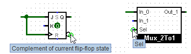

上一节: 创建电路
使用子电路
现在假设我们想要使用 2 对 1 多路复用器的实例构建一个 4 对 1 多路复用器。 当然，我们首先要创建一个新电路，我们将其命名为 Mux_4to1 要将 2 对 1 多路复用器添加到我们的电路中，我们单击 Mux_2to1 circuit once 在资源管理器窗格中 一次 选择它作为工具，然后我们可以通过在画布中单击来添加它的副本（以框表示）。

如果您在资源管理器窗格中双击 Mux_2to1 电路，则窗口将切换为编辑 Mux_2to1 电路。
建立电路后，我们最终得到以下结果。

我们的 4 选 1 多路复用器电路使用了 2 选 1 多路复用器的三个副本，每个副本都画在一个盒子中，左右两侧都有引脚。 该盒子上的引脚对应于 Mux_2to1 电路中的输入和输出引脚。 盒子东面的两个引脚对应于电路的输入，西面的两个引脚对应于输出。 它们从右到左、从上到下从子电路图中读取，并将它们从上到下放置在子电路符号上。
如果标签已与图中的这些引脚相关联，它们将包含在符号中。 此外，当您用鼠标飞过图钉时，它们还会显示为 工具提示 。 您可以通过 首选项面板 禁用此功能。）

其他几个组件也会显示这些提示：例如，对于内置 触发器 的某些引脚 ，将鼠标悬停在其上会解释该引脚的用途。
顺便说一句，电路的每个引脚都必须是输入或输出。 许多制造的芯片都具有在某些情况下充当输入而在其他情况下充当输出的引脚。 您无法在 Logisim-evolution 中构建此类芯片（至少在当前版本中）。
Logisim-evolution 将为电路中出现的所有子电路维护不同的状态信息。 例如，如果一个电路包含一个触发器，并且该电路多次用作子电路，则在模拟较大电路时，每个子电路的触发器将具有其自己的值。
现在我们已经定义了 4 选 1 多路复用器，我们现在可以在其他电路中使用它。 Logisim-evolution 对电路的嵌套深度没有限制 - 尽管它会反对电路自我嵌套！
注意： 编辑用作子电路的电路没有任何问题； 事实上，这种情况很常见。 但请注意，对电路引脚的任何更改（添加、删除或移动它们）也会在包含电路中重新排列它们。 因此，如果更改电路中的任何引脚，您还需要编辑将其用作子电路的任何电路。
下一节: 编辑子电路的外观 .